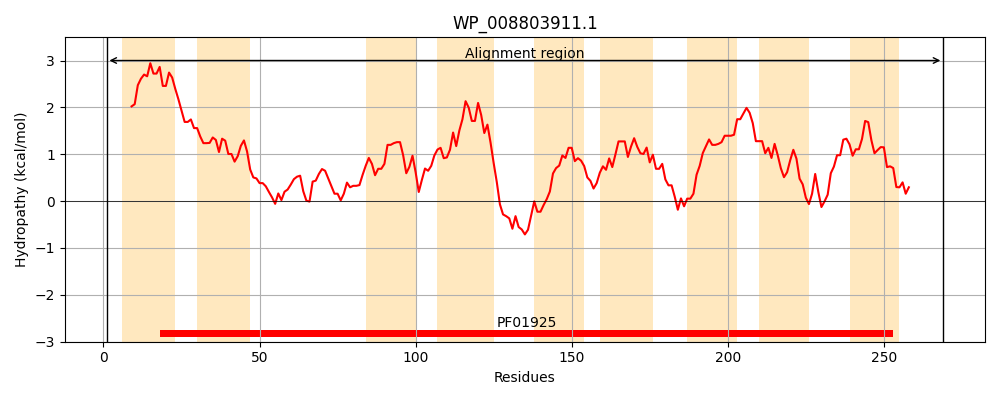
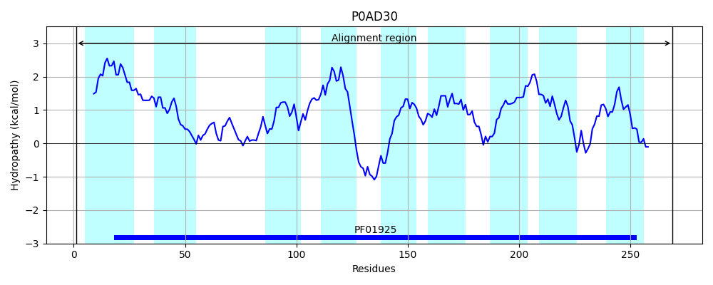
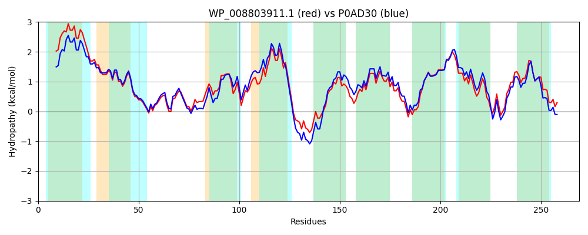

Hit Accession: P0AD30
Hit TCID: 2.A.102.3.1
Hit Description: gnl|BL_ORD_ID|8742 gnl|TC-DB|P0AD30|2.A.102.3.1 Inner membrane protein yfcA - Escherichia coli.
Mach Len: 269
e:0.000000
Query TMS Count : 9
Hit TMS Count: 9
TMS-Overlap Score: 7.300000
Predicted Substrates:None
BLAST Alignment:
Score: 1164 , Bit scores: 452 bits, E-value: 3.0e-163, Alignment length: 269, Percentage identity: 84
Query: 1 MDSFIELFAVSPLVLVVLFFVAILAGFIDSLAGGGGLLTVPALMAAGMPPAQALATNKLQACGGSLSATLYFVRRKVVSLADQKLNILMTFIGSTAGALLVQHVQSDILKQILPLLVIGIGLYFLLMPKLGEADRQRRLYGLPFALVAGGSVGFYDGFFGPGAGSFYALAFVTLAGFNLAKSTAHAKLLNATSNVGGLLLFIIGGKVIWATGFVMMAGQFIGARAGSRLVLSKGQSLIRPMIVIVSAVMSAKLLYDSHGAEILQWLGIH 269
M++F LF VSPL+L VLFFVA+LAGFIDS+AGGGGLLT+PALMAAGM PA ALATNKLQACGGS+SAT+YF+RRKVVSL+DQKLNI MTF+GS +GALLVQ+VQ+D+L+QILP+LVI IGLYFLLMPKLGE DRQRR+YGLPFAL+AGG VGFYDGFFGP AGSFYALAFVTL GFNLAK+TAHAKLLNATSN+GGLLLFI+GGKVIWATGFVM+ GQF+GAR GSRLVLSKGQ LIRPMIVIVSAVMSAKLLYDSHG EIL WLG++
Sbjct: 1 METFNSLFMVSPLLLGVLFFVAMLAGFIDSIAGGGGLLTIPALMAAGMSPANALATNKLQACGGSISATIYFIRRKVVSLSDQKLNIAMTFVGSMSGALLVQYVQADVLRQILPILVICIGLYFLLMPKLGEEDRQRRMYGLPFALIAGGCVGFYDGFFGPAAGSFYALAFVTLCGFNLAKATAHAKLLNATSNIGGLLLFILGGKVIWATGFVMLVGQFLGARMGSRLVLSKGQKLIRPMIVIVSAVMSAKLLYDSHGQEILHWLGMN 269 | Protein Hydropathy Plots: |
|---|
|  |  |
Pairwise Alignment-Hydropathy Plot:
|
|---|
|  |